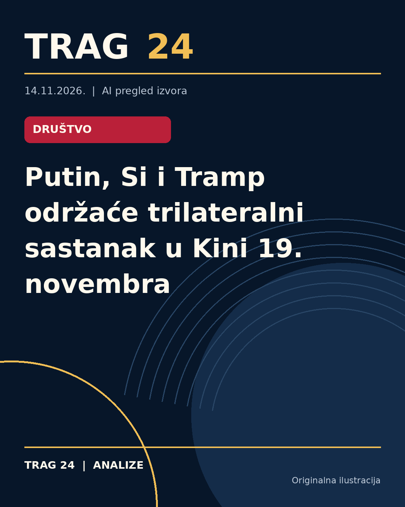

Putin, Si i Tramp održaće trilateralni sastanak u Kini 19. novembra

ŠTA SE DOGODILO
Ruski predsednik Vladimir Putin, kineski predsednik Si Đinping i predsednik SAD Donald Tramp održaće trilateralni sastanak 19. novembra u kineskom gradu Šenženu, na marginama samita Azijsko-pacifičke ekonomske saradnje (APEC). Ovu informaciju je saopštio portparol Kremlja, a prenela ju je ruska agencija RIA.
HRONOLOGIJA
Vest o sastanku pojavila se u danu pred zakazani datum, a britanska agencija Rojters je ranije tokom nedelje navela da je sastanak verovatan, što je potvrdio i portparol Kremlja. Pre sastanka, neimenovani visoki američki zvaničnik izjavio je da Tramp planira da razgovara sa Sijem i Putinom o ratu u Iranu, ali da će izbeći teme vezane za Ukrajinu. Takođe je naglasio da ne očekuje ikakve značajne sporazume od ovog susreta.
ŠTA NAVODE IZVORI
Tri nezavisna izvora – Insajder, Nova.rs i N1 – prenose iste osnovne informacije, oslanjajući se na izveštaje RIA, Rojtersa i AP. Svi izvori napominju da je reč o sastanku bez presedana između vođa najvećih nuklearnih sila, ali ističu mišljenja analitičara da su šanse za konkretne pomake male i da je susret više simboličkog značaja. Navodi o izbegavanju teme Ukrajine i fokusiranju na Iran potiču od američkog zvaničnika, koji nije imenovan.
ŠTA JE POTVRĐENO
Potvrđeno je da će sastanak između Putina, Sija i Trampa biti održan 19. novembra u Šenženu, na marginama samita APEC. Takođe je potvrđeno da će Tramp razgovarati o ratu u Iranu, dok će pitanje Ukrajine izbeći. Sastanak je ocenjen kao jedinstven događaj zbog sudaranja interesa najvećih nuklearnih sila, ali je takođe naglašeno da ne treba očekivati direktne dogovore.
ŠTA NIJE POTVRĐENO
Nema zvaničnih informacija o sadržaju razgovora ili mogućim rezultatima sastanka. Navodi američkog zvaničnika o tome da neće biti dogovora nisu potvrđeni ni demantovani. Takođe nije poznato da li će biti razmatrane i druge teme osim Irana, niti da li je sastanak povezan sa drugim diplomatskim inicijativama.
ŠTA OSTАJE OTVORENO: Ostaje nejasno kakav će tačno uticaj imati ovaj trilateralni sastanak na globalnu politiku ili bilateralne odnose tri zemlje. Takođe nije poznato da li će se nakon susreta objaviti zajednički stavovi ili šta će biti sledeći koraci. Simbolički značaj je istaknut, ali stvarni efekat na sukobe i međunarodne odnose ostaje da se vidi.
Izvori
- https://insajder.net/prenosimo/portparol-kremlj-sastanak-putina-sija-i-trampa-u-kini-19-novembra
- https://nova.rs/vesti/svet/kremlj-sastanak-putina-sija-i-trampa-u-kini-19-novembra/
- https://n1info.rs/svet/kremlj-sastanak-putina-sija-i-trampa-u-kini-19-novembra/
Ova analiza je pripremljena uz pomoć veštačke inteligencije na osnovu javno dostupnih izvora. Navodi izvora nisu nužno nezavisno potvrđeni.